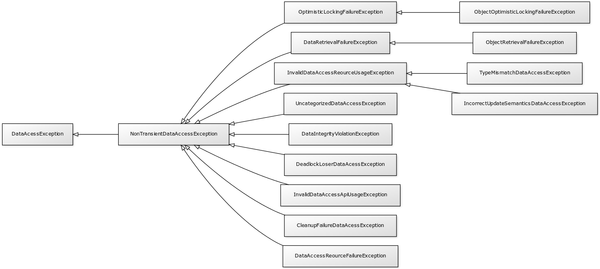

Spring DAO¶
DAO (Data Access Object) est une responsabilité qui est souvent utilisée dans
les applications d’entreprise. Dans le code source d’une application, on peut
trouver des classes nommées UserDao, ProducDao… Ce suffixe « Dao » dénote
que la classe a pour responsabilité d’accéder au système d’information pour lire
ou modifier des données. Comme la plupart des applications d’entreprise stockent
leurs données dans une base de données, les classes DAO sont donc les classes
qui contiennent le code qui permet d’échanger des informations avec la base de données.
En Java, selon la technologie utilisée, il peut s’agir des classes qui utilisent
l’API JDBC ou JPA par exemple.
Le module Spring Data Access reprend ce principe d’architecture en cherchant à simplifier l’intégration et l’implémentation des interactions avec les bases de données.
L’annotation @Repository¶
Le Spring Framework fournit des stéréotypes pour marquer le rôle des classes. Le stéréotype le plus général est défini par l’annotation @Component. Il est également possible d’utiliser l’annotation @Repository pour indiquer qu’une classe sert de point d’accès à un mécanisme de stockage et de recherche d’une collection d’objets. La notion de repository vient de l’ouvrage de Eric Evans (Domain Driven Development).
package fr.epsi.b3;
import org.springframework.stereotype.Repository;
@Repository
public class UserDao {
public void save(User user) {
// ...
}
public User getById(long id) {
// ...
}
}
Intégration de JPA¶
Pour une application utilisant JPA et qui accepte la configuration par annotations, il est possible d’injecter un EntityManager dans un repository grâce à l’annotation @Autowired, @Inject et même @PersistenceContext (qui est l’annotation standard de Java EE).
package fr.epsi.b3;
import javax.persistence.EntityManager;
import javax.persistence.PersistenceContext;
import org.springframework.stereotype.Repository;
@Repository
public class UserDao {
@PersistenceContext
private EntityManager entityManager;
public void save(User user) {
// ...
}
public User getById(long id) {
// ...
}
}
Note
Pour activer JPA, il faut configurer le contexte d’application avec un gestionnaire de transaction JPA.
Uniformité de la hiérarchie des exceptions¶
Un apport du module Spring Data Access est d’uniformiser la hiérarchie des exceptions. En effet, l’API JDBC utilise des exceptions héritant de SQLException qui est une checked exception. JPA utilise des unechecked exceptions héritant de PersistenceException. D’autres bibliothèques ou frameworks proposent à leur tour leur propre hiérarchie d’exceptions.
Pour simplifier la gestion des exceptions, Spring Data Access propose une hiérarchie unique d’exceptions pour toutes ces technologies afin de simplifier la gestion des erreurs pour les applications.
À la base de cette hiérarchie, la classe DataAccessException est une unchecked exception (elle hérite de RuntimeException).
Pour une application utilisant JPA, l’uniformisation de la hiérarchie des exceptions n’est pas activée par défaut. Pour l’activer, il faut utiliser l’annotation @Repository et déclarer dans le contexte d’application un bean de type PersistenceExceptionTranslationPostProcessor.
<bean class="org.springframework.dao.annotation.PersistenceExceptionTranslationPostProcessor" />